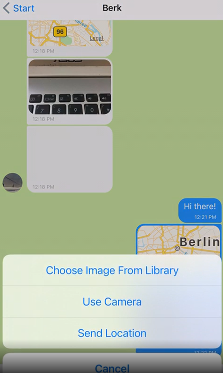
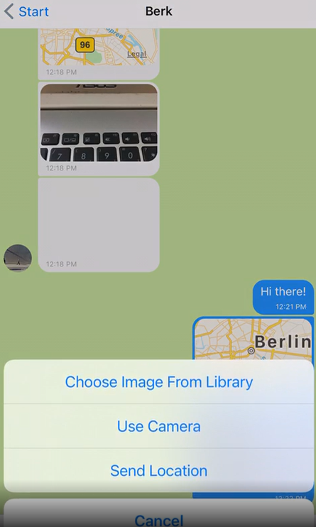

Hi, I'm Berk!
Welcome to my portfolio!
I am a
Please feel free to contact me, if you have any questions.
I am a
Please feel free to contact me, if you have any questions.
I see coding as a puzzle; working on small pieces to build the big picture. Today, I am ready to build myself to reach my goal, and finished the puzzle.
Apart from all these, I am:
HTML / CSS
JavaScript
TypeScript
jQuery
React
React Native
React Redux
Angular
Bootstrap
GiftedChat
A
An app hosted on
A single-page, responsive movie app built with
The general purpose of this application which was created using
A basic to-do list app was built using
An
 

Chit-Chat is a mobile application for fast communication
between users. The app was written using
A basic calculator app was built using
A mobile friendly metronome web app built using the
Angaben gemäß § 5 TMG
Berk Disli
Lichtenberger Str.
10179 Berlin
Vertreten durch:
Berk Disli